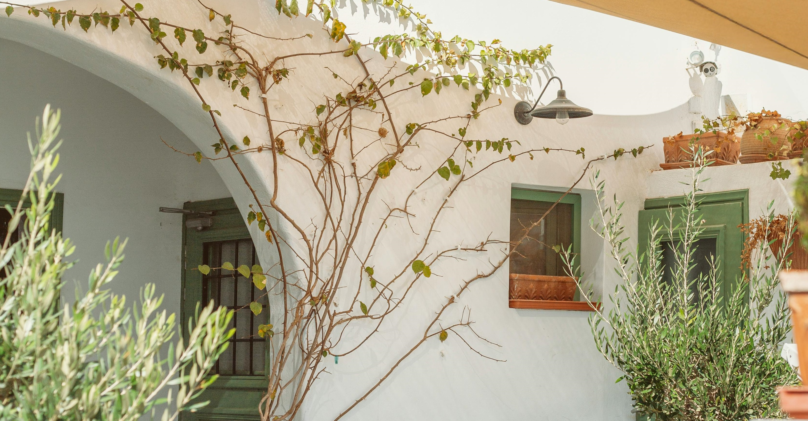

{% extends "data_analysis/base.html" %}
{% block title %}トップ画面{% endblock %}
{% block content %}
<!-- ナビゲーションバー開始 -->
    <nav class="navbar navbar-expand-lg">
      <div class="container">
        <a class="navbar-brand my_navbar_brand">
          <span>SAMURAI KITCHEN</span>
        </a>
        <div class="navbar-toggler hamburger_menu" data-bs-toggle="collapse" data-bs-target="#navbarNav"
          aria-controls="navbarNav" aria-expanded="false" aria-label="Toggle navigation">
          <input type="checkbox" id="hamburger_btn_check">
          <label for="hamburger_btn_check" class="hamburger_btn">
            
            
          </label>
        </div>
        <div class="collapse navbar-collapse justify-content-end" id="navbarNav">
          <ul class="navbar-nav">
            <li class="nav-item px-2">
              <a class="nav-link my_nav_link my-2" aria-current="page" href="#">HOME</a>
            </li>
 
            <li class="nav-item px-2">
              <a class="nav-link my_nav_link my-2" href="#about">ABOUT US</a>
            </li>
 
            <li class="nav-item px-2">
              <a class="nav-link my_nav_link my-2" href="#gallery">GALLERY</a>
            </li>
 
            <li class="nav-item px-2">
              <a class="nav-link my_nav_link my-2" href="#menu">MENU</a>
            </li>
 
            <li class="nav-item px-2">
              <a class="nav-link my_nav_link my-2" href="#review">CUSTOMER REVIEWS</a>
            </li>
 
            <li class="nav-item px-2">
              <a class="nav-link my_nav_link my-2" href="#access">ACCESS</a>
            </li>
              
          </ul>
        </div>
      </div>
    </nav>
 <!-- ナビゲーションバー終了 -->

     <!-- カルーセル開始 -->

   <!-- カルーセル部分 -->
   <!-- idのmyCarouselはインジケーター部分のdata-bs-targetと紐付く必要がある。mb-5で下方向に余白追加。 -->
   <div id="myCarousel" class="carousel slide mb-5" data-bs-ride="carousel">

    <!-- インジケーター部分 -->
    <ol class="carousel-indicators">
      <!-- この箇所と前述のidは紐付いている。data-bs-slide-toの番号がカルーセルの順番。 -->
      <li data-bs-target="#myCarousel" data-bs-slide-to="0" class="active"></li>
      <li data-bs-target="#myCarousel" data-bs-slide-to="1"></li>
      <li data-bs-target="#myCarousel" data-bs-slide-to="2"></li>
    </ol>

    <!-- carousel-inner：カルーセルのキャプションと背景画像の部分。現在は1枚目だけ表示。 -->
    <div class="carousel-inner">
      <div class="carousel-item active">
        
        <div class="carousel-caption">
          <h1 class="my_carousel_caption">
            Welcome to<br>
            SAMURAI KITCHEN
          </h1>
        </div>
      </div>

      <!-- カルーセル2枚目 -->
  <div class="carousel-item">
    
    <div class="carousel-caption">
      <h1 class="my_carousel_caption">
        The fabulous combination of&nbsp;wine&nbsp;and&nbsp;food
      </h1>
    </div>
  </div>

  <!-- カルーセル３枚目 -->
  <div class="carousel-item">
    
    <div class="carousel-caption">
      <h1 class="my_carousel_caption">Get the Italian taste<br>
        at the SAMURAI&nbsp;KITCHEN
      </h1>
    </div>
  </div>

    <!-- コントロールボタン 左側 -->
    <a class="carousel-control-prev" href="#myCarousel" role="button" data-bs-slide="prev">
      <span class="carousel-control-prev-icon" aria-hidden="true"></span>
      <span class="visually-hidden">Previous</span>
    </a>

    <!-- コントロールボタン 右側 -->
    <a class="carousel-control-next" href="#myCarousel" role="button" data-bs-slide="next">
      <span class="carousel-control-next-icon" aria-hidden="true"></span>
      <span class="visually-hidden">Next</span>
    </a>
  </div>
</div>

   
          <!-- フッター開始 -->
    <footer id="footer">
      <div class="container">
        <div class="row">
 
          <!-- 2カラムに分けたレイアウトの左側カラム -->
          <div class="col-12 col-lg-6 position-relative">

            <!-- 左側カラムのレイアウトをさらに分けるためにrowを使用 -->
            <div class="row pt-5">
 
              <!-- 画面をさらに2:10に分割 -->
              <!-- ここは2:10の2の部分 -->
              <div class="col-lg-2 text-center my-3">
 
                <!-- サイトロゴ -->
                
              </div>
 
              <!-- ここは2:10の10の部分 -->
              <div class="col-lg-10 align-self-center my-3">
                <!-- タイトル文字 -->
                <h2 class="m-0 footer_text">SAMURAI RESTAURANT</h2>
              </div>
            </div>
 
            <!-- 営業時間などのテキストを追加 -->
            <div class="restaurant_info py-3">
              <div class="d-flex mb-3">
                
                <p class="p-0 m-0">東京都渋谷区道玄坂2丁目11-1Gスクエア渋谷道玄坂4F</p>
              </div>
              <div class="d-flex mb-3">
                
                <p class="p-0 m-0">12:00-22:00&nbsp;&nbsp;(定休日：火曜日、水曜日)</p>
              </div>
              <div class="d-flex mb-3">
                
                <p class="p-0 m-0">03-1234-5678</p>
              </div>
              <div class="d-flex mb-3">
                
                <p class="p-0 m-0">test@example.com</p>
              </div>
            </div>
 
            <!-- コピーライトを追加 -->
            <div class="copy_right align-items-center">
              <p>
                ©SAMURAI KITCHEN, All Rights Reserved.
              </p>
 
              <!-- SNSアイコンを表示 -->
              
              
            </div>
          </div>
 
          <!-- 2カラムに分けたレイアウトの右側カラム -->
          <div class="col-lg-6 d-none d-lg-block">
            <!-- 背景画像を表示 -->
            
          </div>
        </div>
      </div>
     </footer>
     <script src="https://cdn.jsdelivr.net/npm/bootstrap@5.0.0-beta1/dist/js/bootstrap.bundle.min.js" integrity="sha384-ygbV9kiqUc6oa4msXn9868pTtWMgiQaeYH7/t7LECLbyPA2x65Kgf80OJFdroafW" crossorigin="anonymous" defer></script>
     {% endblock %}

